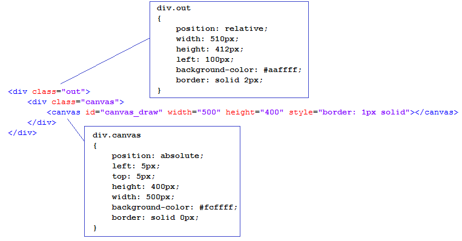

В предыдущем разделе было рассмотрено использование функций входящих в библиотеку canvas2D
для простых геометрических построений на холсте HTML5 Canvas. В последующих разделах
с помощью canvas2D на холсте будут отображены модели огранок алмазов и других драгоценных камней.
На сайте
Three.js и геометрия
можно увидеть 3D-модели огранок алмазов отображенные на холст с помощью
библиотеки ThreeJS. ThreeJS прекрасная библиотека. Но если перед нами стоит задача
просто отобразить трехмерные объекты без эффектов возникающих при их освещении, то можно
обойтись и без ее использования. В данном разделе (и всех последующих разделах) для расчета
координат вершин моделей будут использоваться (так же как и на сайте
Three.js и геометрия)
функции библиотеки WebGeometry, но вывод на холст изображения модели будет осуществлен
уже не функциями библиотеки ThreeJS, а гораздо более простыми функциями библиотеки canvas2D,
которые были рассмотренны в предыдущем разделе.
Еще раз подчеркнем тот факт, что расчет координат вершин моделей будет полностью и без изменений взят отсюда
Three.js и геометрия. Глава 5. Многогранник октагон (часть 1).
В данном разделе создана простейшая online-программа осуществляющая вывод на холст проекцию
многранника октагон. Структура этой программы очень простая.
В данной online-программе модель многогранника имеет фиксированные значения координат вершин,
которые неозможно изменить. Можно только осущесвлять вращение модели вокруг осей X и Y.
Для того чтобы понять как программа функционирует лучше всего рассмотреть ее исходный код,
который сопровождается подробными комментариями.
Все начинается с того, что на WEB-страницу помещается элемент типа div
имеющий следующую структуру:

Необходимо подключить к программе пять JS файлов:
octagon1.js - в этом файле находится запускающая программу функция octagon и непосредственносвязанны
связанные с ней другие функции.
octagon_verts.js - в этом файле находится структура данных модели (СДМ), массив index_cut в котором
зафиксирована связь между гранями модели и номерами вершин модели и
функция VerticesCalculation в которой происходит расчет координат вершин модели.
Эти три объекта полностью задают геометрию модели. В функции facet_colors, которая также находится
в файле octagon_verts.js, происходит заполнение массива colors, каждый элемент которого
содержит цвет в который окрашена соответствующая грань.
polyhedron_canvas.js - файл содержит функцию CreatePolyhedron которая создает массив plgs
Каждый элемент этого массива представляет собой структуру Polygon определяющую конкретную грань
(фасету) трехмерной модели.
WebGeometry.js - файл содержит функции библиотеки WebGeometry.
canvas2D.js - файл содержит функции библиотеки canvas2D.
octagon,
которая запускает выполнение программы:
// Массив в котором хранятся цвета граней модели
var colors = [];
// массив для хранения вершин всех полигонов в виде Point3D
var points = [];
var elem; // ссылка на элемент canvas_draw
var ctx; // контекст рисования на холсте
// Исходные углы задающие положении модели
var angleX = -84*DEGREE;
var angleY = -55*DEGREE;
var angleZ = 0*DEGREE;
// Переменные для обеспечения вращения модели мышью.
var mouseDown = false;
var x_last_mouse = 0;
var y_last_mouse = 0;
function octagon()
{
// Получаем ссылку на элемент canvas_draw
elem = document.getElementById('canvas_draw');
elem.style.position = "relative";
elem.style.border = "1px solid";
// Получаем 2D-контекст рисования на холсте
ctx = elem.getContext("2d");
// SCALE задает ИСХОДНЫЙ масштаб при рисовании проекции модели на плоскость OXY
SCALE = 250;
// xC и yC задают точку (0, 0) на плоскости OXY (на холсте)
xC = elem.width / 2;
yC = elem.height / 2.2;
// Расчет координат вершин 3D модели и создание
// топологии 3D модели с учетом координат вершин и их взаимосвязи.
recalc();
// Вывод модели на экран
draw();
// Обработчики событий связанных с мышью.
elem.onmousedown = handleMouseDown;
document.onmouseup = handleMouseUp;
elem.onmousemove = handleMouseMove;
}
В функции octagon при запуске программы выполняются функции recalc и draw.
Эти же функции вызываются в процессе поворота модели мышью.
Функции recalc и draw имеют следующий вид:
function recalc()
{
Расчет координат вершин 3D-модели осуществляется в функции VerticesCalculation.
Работа этой функции подробно рассмотрена на странице
Three.js и геометрия. Глава 5. Многогранник октагон (часть 1).
vertices.length = 0; // обнуление массива vertices
VerticesCalculation();
// Создание топологии 3D модели с учетом координат вершин и их взаимосвязи.
plgs.length = 0;
colors.length = 0;
points.length = 0;
CreatePolyhedron();
}
// Отображение модели на холсте
function draw()
{
// Перед началом отображения модели
// холст необходимо очистить.
ctx.clearRect(0, 0, elem.width, elem.height);
// Задание цвета граней
// В функции facet_colors производится заполнение массива
// colors цветами граней модели.
// Например, так : colors[ind] = "rgb(150, 150, 150)";
// ind - номер грани
facet_colors();
// Расчет матриц поворотов модели вокруг координатных осей X, Y и Z
// и самих поворотов производится при помощи функций библиотеки WebGeometry.
var matX = new Matrix3D();
matX.RotX(angleX);
var matY = new Matrix3D();
matY.RotY(angleY);
var matZ = new Matrix3D();
matZ.RotZ(angleZ);
var i, j;
// Отрисовка модели на холсте - ребра и грани
// Цикл по всем граням модели
for (i = 0; i < plgs.length; i++)
{
// Цикл по всем вершинам текущей грани.
// Пересчет координат вершин грани, так как она повернута.
for (j = 0; j < plgs[i].vertexes.length; j++)
{
// поворот вершин грани модели
plgs[i].vertexes[j] = plgs[i].vertexes[j].Rotate(matX);
plgs[i].vertexes[j] = plgs[i].vertexes[j].Rotate(matY);
plgs[i].vertexes[j] = plgs[i].vertexes[j].Rotate(matZ);
}
// Первые три точки каждого многоугольника (грани) используются для создания двух 3D-векторов.
var pt0 = new Point3D(plgs[i].vertexes[0][0], plgs[i].vertexes[0][1], plgs[i].vertexes[0][2]);
var pt1 = new Point3D(plgs[i].vertexes[1][0], plgs[i].vertexes[1][1], plgs[i].vertexes[1][2]);
var pt2 = new Point3D(plgs[i].vertexes[2][0], plgs[i].vertexes[2][1], plgs[i].vertexes[2][2]);
// Два 3D-вектора vec1 и vec2
var vec1 = new Vector3D(pt1[0] - pt0[0], pt1[1] - pt0[1], pt1[02] - pt0[2]);
var vec2 = new Vector3D(pt2[0] - pt0[0], pt2[1] - pt0[1], pt2[02] - pt0[2]);
// Векторное произведение vec1 и vec2 дает нормаль плоскости в которой лежит грань
var vecNormal = vec1.Cross(vec2);
if (vecNormal[2] >= 0) // По направлению нормали определяем
{ // передние и задние грани модели
// рисуем грани и ребра на внешней части модели.
// Цвет грани задан ранее вызовом функции facet_colors().
// Цвет ребер - черный ("Black").
// В функции draw_polygon во втором параметре, по определению,
// нужно задавать 2D-объекты. Но если будут заданы 3D-объекты,
// то (автоматически) третья координата (по оси Z) будет не принята
// во внимание и отрисовка на холсте отработает правильно.
draw_polygon(ctx, plgs[i].vertexes, 1, "Black", colors[i]);
}
}
}
Основная идея данного варианта заключается в том, что производится упорядочивание многоугольников в соответствии с удаленностью их от точки зрения. Самые дальние от точки зрения многоугольники отображаются первыми, самые близкие - последними. Поэтому ближние многоугольники закрывают дальние. При создании моделей огранок ни одна грань огранки не пересекается с другими гранями. Если бы в процессе решения задачи (не той, которую мы решаем) оказалось, что грани пересекаются, то это очень сильно осложнило решение. В таком случае пришлось бы разрезать грани по линиям их пересечения и только после этого производить сортировку по глубине граней в число которых бы вошли и новые разрезанные грани. К счастью в нашем случае такая проблема не возникает, так как грани тех моделей, которые будут созданы, никогда не пересекаются.
function draw()
{
// Перед началом отображения модели
// холст необходимо очистить.
ctx.clearRect(0, 0, elem.width, elem.height);
// Задание цвета граней
facet_colors();
// Расчет поворотов модели вокруг координатных осей X, Y и Z.
var matX = new Matrix3D();
matX.RotX(angleX);
var matY = new Matrix3D();
matY.RotY(angleY);
var matZ = new Matrix3D();
matZ.RotZ(angleZ);
var i, j;
// Цикл по всем граням модели
for (i = 0; i < plgs.length; i++)
{
// Задаем очень большое минимальное значение координаты Z для текущей грани
// которого в реальности быть не может.
plgs[i].z_min = 100;
// Цикл по всем вершинам текущей грани.
for (j = 0; j < plgs[i].vertexes.length; j++)
{
// Поворот грани модели и
// пересчет координат вершин грани, так как она повернута.
plgs[i].vertexes[j] = plgs[i].vertexes[j].Rotate(matX);
plgs[i].vertexes[j] = plgs[i].vertexes[j].Rotate(matY);
plgs[i].vertexes[j] = plgs[i].vertexes[j].Rotate(matZ);
// Для текущей грани находим минимальное значение координаты Z
if (plgs[i].vertexes[j][2] < plgs[i].z_min)
plgs[i].z_min = plgs[i].vertexes[j][2];
}
}
// Сортируем грани модели по удаленности (по координате Z)
plgs.sort(function(a, b)
{
return a.z_min - b.z_min;
})
// Отображаем на холсте отсортированные грани модели.
// Самые удаленные грани рисуем первыми.
// Более близкие грани будут отрисованы поверх более дальних граней.
for (i = 0; i < plgs.length; i++) // цикл по всем граням модели
{
// Отрисовка грани
draw_polygon(ctx, plgs[i].vertexes, 1, "Black", colors[i]);
}
}
В дальнейшем мы всегда будем использовать способ, в котором по направлению нормали определяются передние и задние грани модели. Когда в следующих разделах мы введем возможность по наведению курсора мыши на грань модели выводить номер грани присвоенный ей изначально, то сортировка граней по глубине сделает немного более сложным определение правильного номера грани. Это связано с тем, что в процессе сортировки грань, например, идущая первой, переместится на десятое место. Поэтому в структуру грани придется вводить дополнительное поле определяющее ее начальный номер. Сортировка граней по глубине приведена только в качестве примера возможного альтернативного решения задачи.
Способ, когда видимые грани модели определяются по направлению нормалей к граням, хорошо работает только для выпуклых объектов. Для моделей огранок типа сердце (в этой огранке есть глубокий вырез) можно поступить следующим образом. Сначала отобразить все невыпуклые части модели (в сердце невыпуклой частью является только рундист огранки), а затем - все выпуклые (в сердце это корона и павильон). При таком подходе к решению задачи видимость граней будет определена корректно.
CreatePolyhedron осуществляет построение структур данных используемых при создании
модели. Эта функция изменена по сравнению с одноименной функцией с сайта
Three.js и геометрия.
Изменения заключаются в следующем:
В HTML5 Canvas присутствует возможность заливки на холсте замкнутых контуров. Поэтому не требуется
предварительная триангуляция полигонов. После того как нарисован полигон, можно тут же закрасить его
при помощи метода HTML5 Canvas fill. В случае использования ThreeJS нет возможности с помощью одной
функции закрасить сразу весь многоугольник - его необходимо сначала разбить на треугольники.
Библиотека ThreeJS сделана на основе WebGL и вследствии этого работает только с треугольниками.
Поэтому цвет одномоментно можно назначить только одному треугольнику, а для закраски всего
многоугольника требуется приложить дополнительные усилия.
Другое изменение функции CreatePolyhedron заключается в том, что из нее убраны конструкции
использующие элементы входящие в библиотеку ThreeJS.
Каждая грань (фасета) трехмерной модели представлена нижеприведенной структурой
function Polygon() { this.IndexFacet = []; // индексы вершин одной конкретной грани // с дублированной первой вершиной грани this.vertexes = []; // массив координат вершин одной конкретной грани } var plgs = []; // Массив граней из которых состоит модель. // Создаем массив граней модели - заполняем массивы plgs и faces. function CreatePolyhedron() { var i, j, k; k = 0; // k - номер в массиве вершин vertices // массив vertices объявлен в том файле, // где находится функция VerticesCalculation() for (i = 0; i < vertices.length/3; i++) { var pt = new Point3D(); for (j = 0; j < 3; j++) { pt[0] = vertices[k]; pt[1] = vertices[k + 1]; pt[2] = vertices[k + 2]; } points.push(pt); // фактически все vertex'ы подряд k = k + 3; } var index; var index_begin; var i_index = 0; // Номер индекса, проходит по всем вершинам огранки var iPolyg = 0; i = 0; for (;;) // Цикл по всем полигонам { // Полигон var plg = new Polygon(); index = index_cut[i_index]; i_index++; // Сразу делаем инкремент - вдруг нарвемся на "break" !!! if (index == -100) break; // Прошли по всем полигонам index_begin = index; // index_begin - индекс начала новой грани plg.IndexFacet.push(index); for (;;) { // В текущем полигоне заполняем массив индексов его вершин index = index_cut[i_index]; plg.IndexFacet.push(index); i_index++; // Берем следующую вершину текущей грани if (index == index_begin) { // Нашли признак конца вершин для текущей грани k = 0; for (k = 0; k < plg.IndexFacet.length; k++) { var x = points[plg.IndexFacet[k]][0]; var y = points[plg.IndexFacet[k]][1]; var z = points[plg.IndexFacet[k]][2]; var pt = new Point3D(x, y, z); plg.vertexes.push(pt); } break; // все вершины текущей грани прошли } } // Полностью заполненную очередную структуру Polygon кладем в массив plgs plgs.push(plg); iPolyg++; } }Polygon. Структура представляет собой часть плоскости, ограниченной многоугольником (полигоном). Каждый многоугольник определяется набором индексов вершин принадлежащих модели. Например, если грань ограничена многоугольником, который можно обойти путем прохода через вершины 8, 16, 23 и 15, то эта грань должна быть записана в массивеindex_cutв виде 8, 16, 23, 15, 8. Повторение вершины 8 говорит о том, что обход данной грани закончен. Все грани (полигоны) 3D-модели обходим против часовой стрелки. По умолчанию в OpenGL, который является прототипом для WebGL, та сторона полигона, для которой порядок перечисления вершин совпадает с обходом против часовой стрелки, считается лицевой. На модель при этом, конечно, смотрим снаружи. В рассматриваемой online-программе все грани модели также обходятся против часовой стрелки. Чтобы все стало более понятным поставьте "галочку" в поле контроллера "enumeration" и в файле octagon_verts.js взгляните на массивindex_cut, в котором приведена подробная нумерация вершин модели. *********************************************************************************************** * Для справки *vertices- массив в котором подряд записаны координаты * всех вершин модели в виде x, y, z, x, y, z .......... x, y, z * *vertexes- массив, состоящий из элементовPoint3D, координат вершин одной конкретной грани * *points- массив, состоящий из элементовPoint3D, координат всех вершин всех граней *********************************************************************************************** В результате работы функции VerticesCalculation получаем массив vertices в котором подряд записаны координаты всех вершин модели в виде: [ x0, y0, z0, x1, y1, z1, x2, y2, z2, ........... ........... xn, yn, zn ] Требуется преобразовать этот массив к массиву points который будет иметь следующий вид: [(x0, y0, z0), (x1, y1, z1), ... (xn, yn, zn)] Массив points в дальнейшем также потребуется в функции isCorrect.
В следующем разделе мы добавим возможность изменять размеры отдельных частей модели, высвечивать номера вершин, выбирать отдельные грани и отображать значения координат всех точек принадлежащих модели.